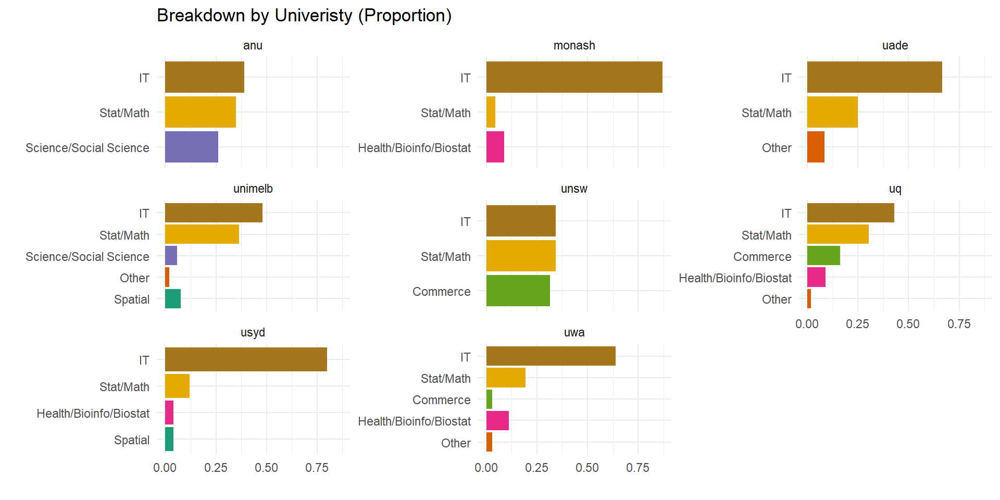
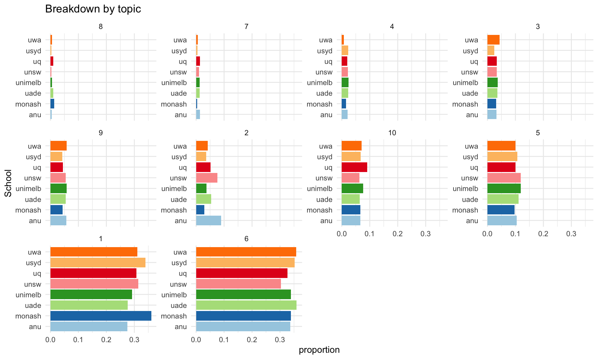

Defining Data Science
A Case Study in Australia
17 October 2022
Employer Perspectives
- 2,857 Data Science job postings on Seek.com from 2019-2021
- 535 Senior/ Managerial positions and 25 graduate program



| Topic I | Topic II | Topic III | Topic IV | Topic V | Topic VI | Topic VII | Topic VIII | Topic IX | Topic X |
|---|---|---|---|---|---|---|---|---|---|
| window | comput | ibm | algorithm | network | bit | format | intel | softwar | languag |
| system | system | comput | can | use | instruct | use | chip | compani | program |
| version | program | system | number | can | memori | imag | design | appl | use |
| releas | use | disk | function | web | use | digit | processor | free | compil |
| support | machin | drive | set | data | address | can | bit | use | code |
| user | design | use | state | internet | regist | video | core | also | function |
| oper_system | process | control | languag | secur | processor | standard | mhz | develop | object |
| oper | develop | machin | use | access | oper | disc | use | open | type |
| os | inform | card | symbol | protocol | can | data | introduc | sourc | can |
| file | softwar | unit | problem | link | data | file | microprocessor | user | implement |